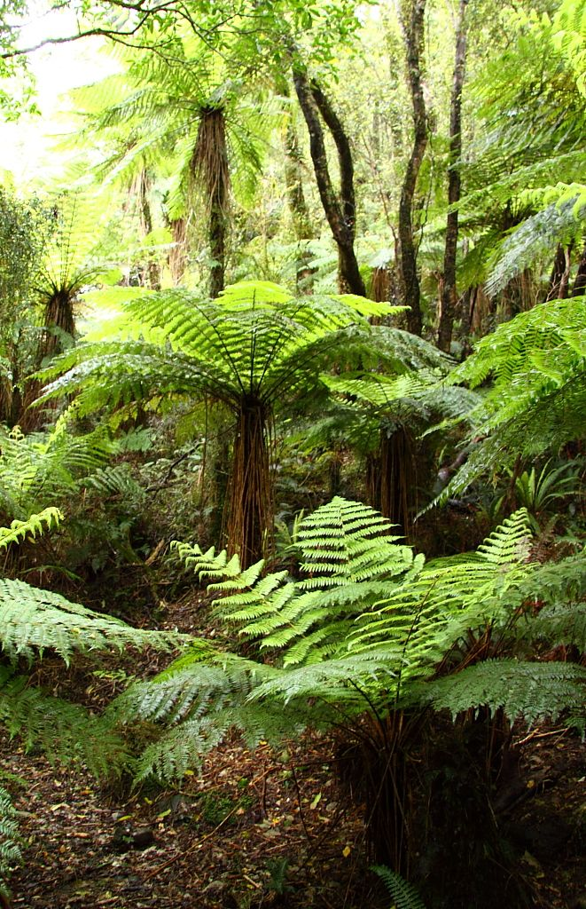
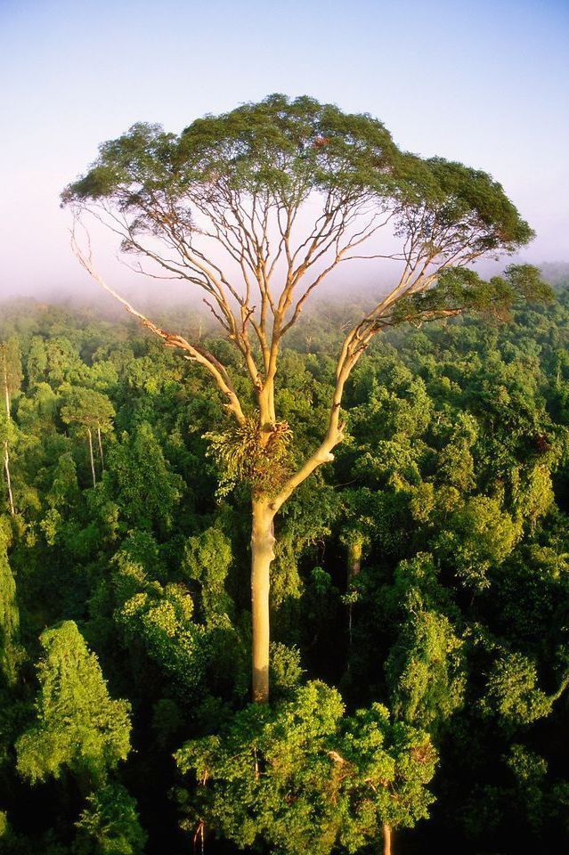
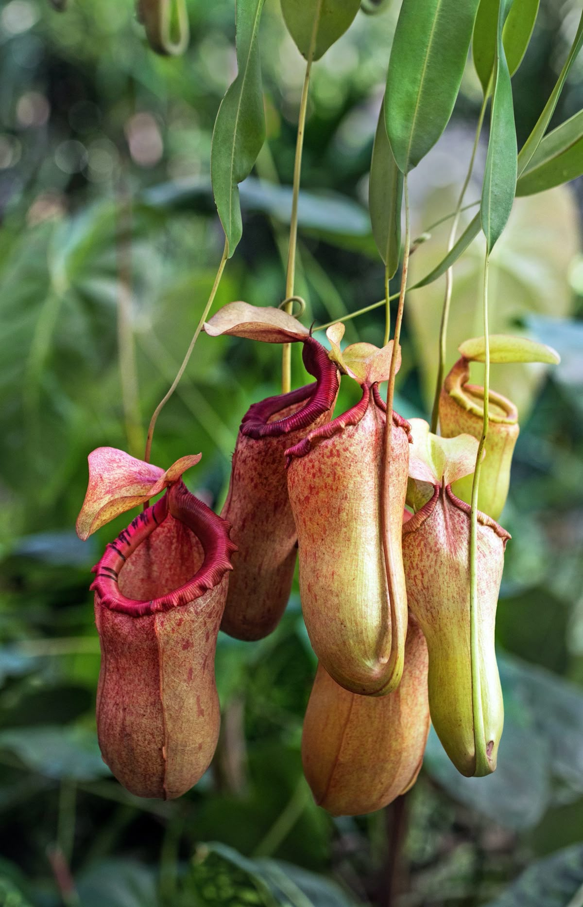
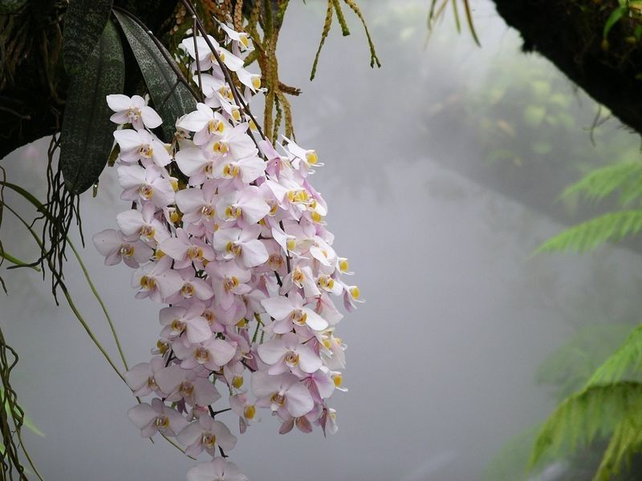
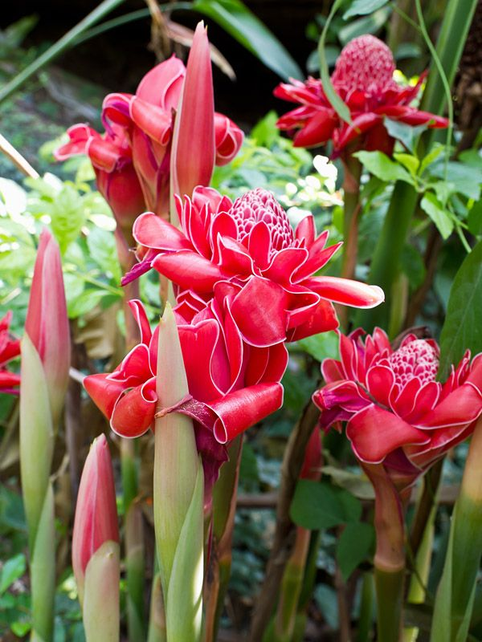
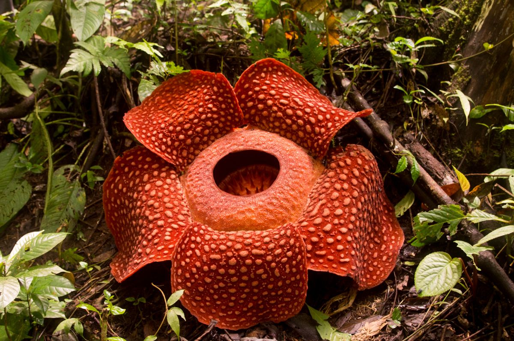
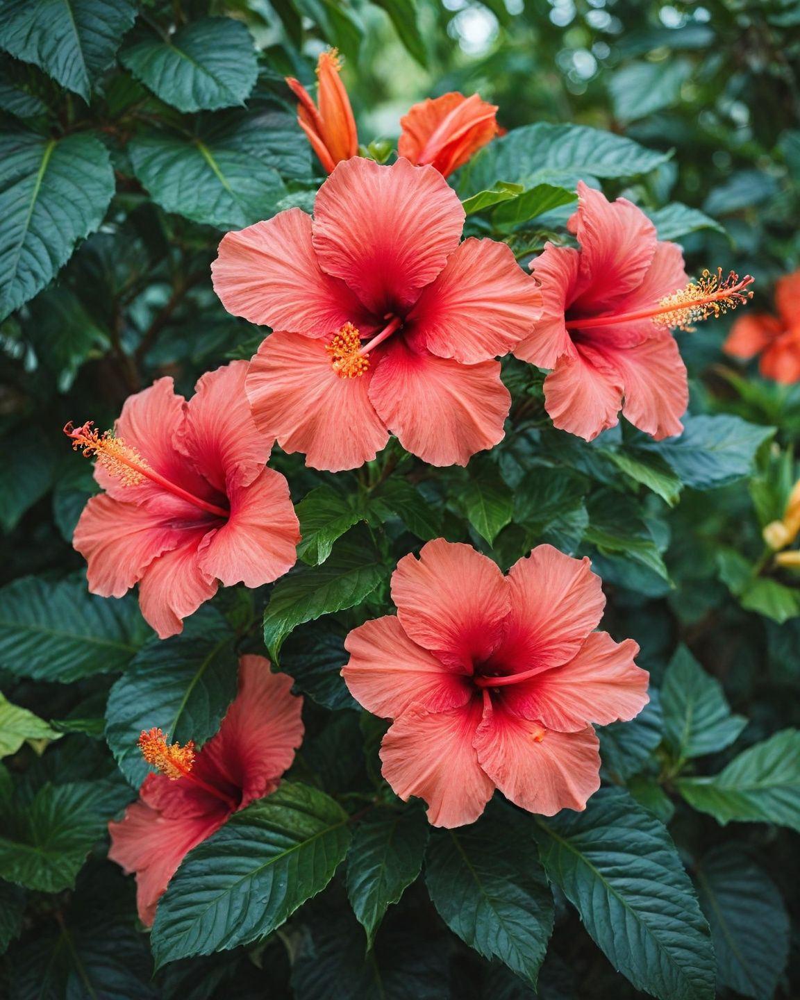

Explore the ancient plant life that sustains the rainforest ecosystem.
Our rainforests are home to over 15,000 species of vascular plants, including the world's largest flower.

Ancient plants that have existed since the time of the dinosaurs. They cover the damp forest floor and help retain soil moisture.
Fast-growing and versatile, wild bamboo clusters are common in secondary forests, preventing soil erosion and providing food for wildlife.

The giants of the forest. These massive trees form the canopy layer, reaching heights of over 60 meters and providing homes for birds and monkeys.

These carnivorous plants trap insects in their fluid-filled cups. Malaysia is home to over 30 different species of Nepenthes.

With thousands of species, wild orchids add vibrant color to the green forest. Many grow as epiphytes on the branches of taller trees.

A stunning pink flower often used in local cuisine. In the wild, it grows in large, vibrant clumps near riverbanks.

Known as the "Corpse Flower," the Rafflesia arnoldii produces the largest single flower on Earth. It has no leaves, stems, or roots.

Malaysia's national flower. While common in gardens, wild varieties can be found in the forest fringes, symbolizing courage and vitality.
Visual data on the density and distribution of key plant species across the region.
Plants are the producers of the forest. They generate oxygen, store carbon, maintain the water cycle, and provide food for every animal species.